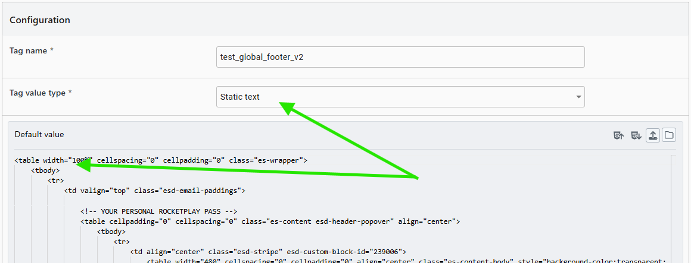
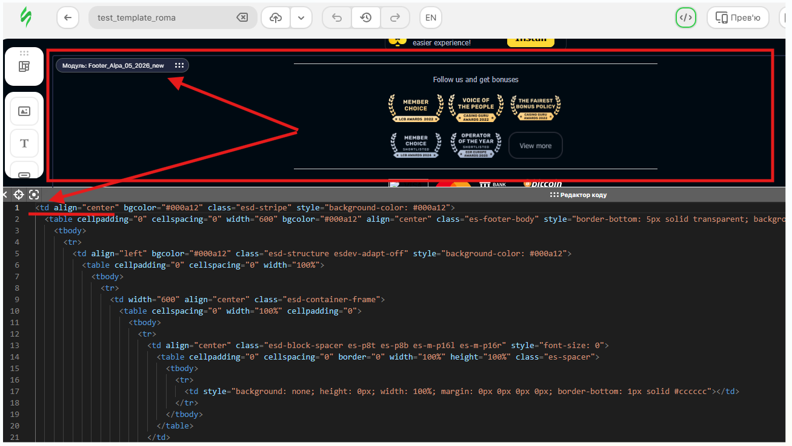
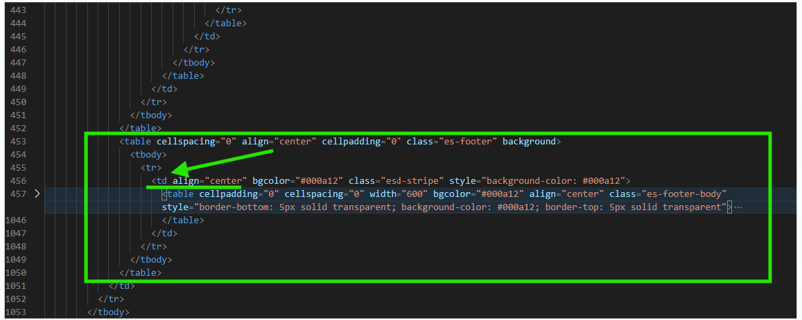
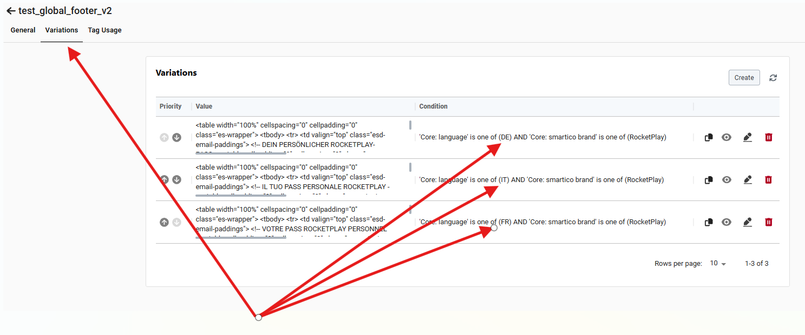

Повний посібник з використання динамічного контенту та фрагментів листів
🔖 1. Що таке Label Tag?
Label Tag – це динамічний контейнер даних у Smartico. Він дозволяє вставити в email-шаблон (або будь-який інший комунікаційний ресурс) контент, який змінюється залежно від умов: мови користувача, країни, VIP-рівня, випадковим чином або навіть дня тижня.
💡 Простими словами:
Шаблон – це "скелет" листа (дизайн, розташування блоків, кольори), а Label Tag – це "м'язи" (конкретний текст, картинка, посилання), яке підставляється в цей скелет.
Централізоване управління контентом
Label Tags ідеально підходять для стандартизованих елементів електронних листів, таких як хедери (шапки) та футери (підвали), які використовуються в багатьох шаблонах. Використання Label Tags дозволяє:
Забезпечити консистентність: Всі ваші листи матимуть однаковий хедер/футер.
Спростити оновлення: Змінивши Label Tag один раз, ви автоматично оновите його у всіх листах, де він використовується.
Оптимізувати час: Не потрібно копіювати та вставляти один і той же код у кожен шаблон.
📊 2. Типи Label Tags, їхнє призначення та правила розподілу контенту
Типи Label Tags та їхнє призначення
У Smartico існує три типи лейблів. Від правильного вибору залежить стабільність відображення листа та коректність виконання логіки.
Тип лейбла
Коли використовувати?
Приклад
Static text
У 90% випадків. Для буквальних текстів, URL картинок, простих посилань, а також для тегів HTML або фрагментів коду.
Лише для логіки. Коли контент має обчислюватися: рандомайзер, залежність від дня тижня, підрахунок дати або генерація промокоду. Функція повертає кінцевий рядок (текст або URL).
{{label.name_self}} – результат роботи функції
JS function with parameters
Для динамічних розрахунків. Коли функції потрібно передати число ззовні (наприклад, суму бонусу з кампанії). Функція повертає кінцевий рядок.
{{label.cash_bonus(15)}} – функція отримає 15 як параметр
⚠️ Важливо! "Static text" проти "JavaScript function" для HTML-фрагментів
При створенні Label Tag для вставки HTML-верстки (наприклад, хедерів або футерів електронних листів) критично важливо правильно вибрати "Tag value type".
✅ Використовуйте "Static text" для статичних елементів та HTML-фрагментів
Тип "Static text" призначений для буквального тексту або HTML-коду. Smartico просто вставить вміст цього тегу "як є" у ваш шаблон. Це є коректним і надійним способом для вбудовування HTML.

✅ Правильний підхід: лише текст/посилання, фрагмент коду
❌ Уникайте "JavaScript function" для HTML-фрагментів
Якщо ви встановлюєте "Tag value type" як "JavaScript function", Smartico очікує отримати дійсний JavaScript-код, який він може виконати або оцінити. Хоча ваш HTML-код може відображатися коректно в електронних листах навіть з цим типом, це відбувається через те, що:
Поштові клієнти (Gmail, Outlook тощо) з міркувань безпеки не виконують JavaScript у тілі листа. Вони просто ігнорують JavaScript-частину і рендерять HTML.
Smartico може намагатися внутрішньо проаналізувати або валідувати вміст як JavaScript, що може призвести до незначних внутрішніх помилок логування або додаткового навантаження.
Потенційні проблеми:
Крихкість: Майбутні оновлення Smartico можуть суворіше застосовувати тип "JavaScript function", що може призвести до того, що ваш тег перестане працювати або викликатиме помилки.
Неоднозначність: Це створює плутанину для інших користувачів або розробників, які працюватимуть з системою.
Нецільове використання: Якщо такий тег випадково буде використаний в іншому місці платформи Smartico, де JavaScript *дійсно* виконується (наприклад, у веб-віджеті), це призведе до помилок виконання.
Висновок: Завжди використовуйте тип "Static text" для Label Tags, які містять HTML-верстку, щоб забезпечити ясність, надійність та коректність конфігурації.
⚠️ Так робити не треба: цілий HTML-блок у JavaScript function, а також відсутня сама функція
Правила розподілу контенту
Щоб ваші листи коректно перекладалися автоматично (Auto-Translate) та легко редагувалися, дотримуйтесь простого правила:
Що залишаємо в Email Template (верстка)
Що кладемо в Label Tags (дані)
Вся HTML-верстка, рамки, фон, кольори
Динамічний текст оферу (наприклад, "Бонус 100%")
Статичні тексти, які не змінюються
Посилання на картинки (хедер, футер, головне зображення)
Розташування елементів (колонки, рядки)
Текст для кнопки CTA (наприклад, "Отримати бонус")
Загальні тексти (наприклад, "Вітаємо!")
Посилання для переходу (урли)
📌 Чому це важливо?
Тоді система автоперекладу зможе коректно перекласти текст у темплейті, але не чіпатиме теги (бо там можуть бути коди чи нечитабельні символи). Це також забезпечує гнучкість у дизайні та легкість оновлення контенту.
Щоб уникнути порушення верстки та стилів, при копіюванні HTML-фрагментів зі Stripo для вставки в Label Tag, важливо отримати повний, самодостатній блок.
⚠️ Проблема: Копіювання лише <td> елементів
Якщо ви просто скопіюєте візуальний блок у Stripo, це може дати вам лише елемент <td> або його фрагмент. При вставці такого фрагмента в Label Tag, а потім у інший email-шаблон, верстка може зламатися, оскільки <td> потребує батьківських елементів <tr> та <table> для коректного відображення.

✅ Неправильно: копіювання лише того що показує страйпо де код починається з <td>
✅ Рекомендований спосіб копіювання зі Stripo для Label Tag
Найкращий спосіб отримати повний і коректний HTML-фрагмент (хедер або футер) для Label Tag:
Створіть ваш хедер/футер у Stripo як окремий блок або частину тестового шаблону.
Експортуйте весь email-шаблон зі Stripo як HTML-файл.
Відкрийте експортований HTML-файл у текстовому редакторі (наприклад, Sublime Text, VS Code, Notepad++).
Знайдіть повний блок <table>...</table>, який відповідає вашому хедеру або футеру.
Скопіюйте цей повний блок <table> (включно з відкриваючим <table> та закриваючим </table> тегами).
Цей метод гарантує, що ви отримаєте всі необхідні обгортаючі теги та стилі, що забезпечить коректне відображення фрагмента в будь-якому email-шаблоні.

✅ Правильний підхід: початок контейнеру з тегу <table>
Крок 2 Створення базового Label Tag з HTML-фрагментом
Створіть основний Label Tag, який буде містити HTML-фрагмент за замовчуванням (fallback).
Перейдіть до Marketing → Labels (Маркетинг → Мітки).
Натисніть кнопку "Create New Label" (Створити нову мітку).
У полі "Name" (Назва) введіть унікальне ім'я, наприклад: email_footer_global.
У полі "Tag value type" (Тип значення тегу) виберіть "Static text".
У полі "Default value" (Значення за замовчуванням) вставте HTML-код, отриманий зі Stripo (Крок 1). Цей код буде використовуватися як запасний (fallback), якщо жодна з варіацій не відповідає умовам. Зазвичай це англійська версія або найпоширеніша.
Натисніть "Save" (Зберегти).
Крок 3 Вставка Label Tag в Email-шаблон
Після створення Label Tag, вставте його в потрібне місце вашого email-шаблону.
Для хедерів: Вставляйте Label Tag на самому початку HTML-коду вашого листа, одразу після відкриваючого тегу <body> або основного обгортаючого контейнера.
Для футерів: Вставляйте Label Tag на самому кінці HTML-коду вашого листа, перед закриваючим тегу </body> або основним обгортаючим контейнером.
💡 Приклад вставки Label Tag в email-шаблон
У вашому email-шаблоні (наприклад, у Stripo, після експорту HTML) це виглядатиме так:
Зверніть увагу, що в шаблоні листа ви вставляєте один і той же Label Tag (наприклад, {{label.email_footer_global}}) для всіх мов. Smartico сам подбає про підстановку потрібної мови на основі умов у "Variations".
Крок 4 Додавання багатомовних варіацій
Тепер, коли базовий Label Tag працює, додайте окремі варіації для кожної мови, яку ви підтримуєте, або для комбінацій мов/країн/брендів.
Відкрийте ваш Label Tag (наприклад, email_footer_global).
Перейдіть на вкладку "Variations".
Натисніть кнопку "Create" (Створити).
У вікні створення варіації:
"Brand" (Бренд): Виберіть конкретний бренд.
"Language" (Мова): Виберіть одну або декілька мов, для яких призначена ця варіація.
"Currency" (Валюта): Виберіть конкретну валюту, якщо потрібно, або залиште "Any".
"Country" (Країна): Виберіть одну або декілька країн, якщо потрібно, для яких призначена ця варіація.
"Tag value" (Значення тегу): Вставте повний HTML-код для цієї конкретної варіації.
Натисніть "Save" (Зберегти).
Повторіть кроки 3-5 для кожної потрібної мови або комбінації умов (EN, DE, IT, FR тощо), створюючи окрему варіацію з відповідним HTML-кодом та умовами.

✅ Один Лейбл тег з перекладами на три мови + одна дефолтна, замість 4-х різних Лейбл тегів з різними мовами
🎲 4. Кейс: Налаштування "Рандомайзера" для динамічного контенту
Проблема: Ви запускаєте довготривалу тригерну кампанію. Якщо надсилати один і той самий лист щоразу, це знижує репутацію домена та набридає користувачам - що спонукає їх до відписки листів як "Спам".
Рішення: Використовуйте Label Tag типу JavaScript function, який щоразу повертатиме випадковий контент.
Крок 1 Створюємо Label Tag (рандомайзер тексту)
Тип: JavaScript function. Код:
function() {
var texts = [
'Ваш депозит зараховано! Гайда грати!',
'Гроші на рахунку! Час вигравати!',
'Депозит успішний! Оберіть гру та починайте!'
];
var randomIndex = Math.floor(Math.random() * texts.length);
return texts[randomIndex];
}
Крок 2 Створюємо Label Tag (рандомайзер картинки)
Тип: JavaScript function. Код:
function() {
var images = [
'https://your-cdn.com/banner1.jpg',
'https://your-cdn.com/banner2.png',
'https://your-cdn.com/banner3.gif'
];
var randomIndex = Math.floor(Math.random() * images.length);
return images[randomIndex];
}
Крок 3 Вставляємо в Email Template
Для тексту:{{label.random_text}} (просто вставляєте у потрібне місце)
Для картинки:<img src="{{label.random_image}}" alt="banner" style="width:100%;">
👉 ВАЖЛИВО!
JS функція повертає лише текст або URL. Вся HTML-обгортка (<img src="...">) залишається в темплейті!
✅ Мультимовність рандомайзера через Variations
Для мультимовності рандомайзера, який є JavaScript function, ви можете використовувати поле "Variations" у Label Tag. Тут додаються відповідні налаштування мови (і/або бренду, країни) і вставляється JavaScript-код, який повертає рандомний текст/URL для цієї конкретної мови. В темплейт буде підставлятись результат лейбл тега з мовою, яка вказана в профілі клієнта.
✅ Один Лейбл тег (JS function) + додаткові варіації для перекладів, замість кількох окремих Лейбл тегів.
Альтернатива Просунутий рівень: Рандомайзер з внутрішнім перекладом у JS функції
Можна створити одну функцію з мовними варіантами, яка повертатиме текст мовою, яка зазначена в профілі клієнта, без необхідності створювати окремі варіації для кожної мови в інтерфейсі Smartico. Цей підхід може бути корисним для дуже складних JS-функцій, де логіка перекладу тісно інтегрована.
function() {
var lang = state.core_language || 'en'; // Отримуємо мову користувача, за замовчуванням 'en'
var texts = {
en: ['Deposit confirmed!', 'Money added!', 'Ready to play!'],
de: ['Einzahlung bestätigt!', 'Geld hinzugefügt!', 'Bereit zu spielen!'],
fr: ['Dépôt confirmé!', 'Argent ajouté!', 'Prêt à jouer!'],
uk: ['Депозит зараховано!', 'Гроші на рахунку!', 'Готові грати!']
};
var langTexts = texts[lang] || texts.en; // Вибираємо тексти для відповідної мови, або англійську за замовчуванням
var randomIndex = Math.floor(Math.random() * langTexts.length);
return langTexts[randomIndex];
}
💡 Коли використовувати цей підхід?
Цей метод підходить, якщо ви хочете, щоб вся логіка рандомайзера та перекладу була інкапсульована в одній JavaScript-функції, і вам не потрібно використовувати поля "Brand", "Currency", "Country" для варіацій. Однак, для більшості випадків, використання вбудованих "Variations" є простішим та більш керованим.
💎 7. Життєві поради (Best Practices)
Тестуйте перед запуском. Використовуйте функцію попереднього перегляду в редакторі, щоб побачити, який саме контент підставиться для різних сегментів.
Уникайте зайвої логіки. Якщо текст статичний (не залежить від дня тижня/рандому тощо), використовуйте Static text.
Слідкуйте за використанням. Система показує, де саме використовується лейбл. Якщо лейбл ніде не використовується, його краще видалити, щоб не смітити.
Не плутайте з тегами користувача.Label Tags – це для контенту. User markers (core_tags) – це для сегментації та зберігання даних про користувача.
Використовуйте значення за замовчуванням (Fallback). Завжди заповнюйте поле "Default value" на вкладці "General" вашого Label Tag. Це значення буде використано, якщо жодна з умов, визначених у "Variations", не буде виконана для конкретного користувача. Це гарантує, що лист завжди матиме коректний фрагмент, навіть якщо мова користувача не визначена або не має відповідної варіації.
Валідація HTML. Якщо виникають проблеми з версткою, скопіюйте HTML-код з Label Tag (або конкретної варіації) і перевірте його за допомогою онлайн-валідаторів HTML, щоб виявити синтаксичні помилки.
Кешування. Іноді зміни в Label Tags можуть не відображатися миттєво через кешування. Якщо ви внесли зміни, але вони не з'являються в тестових листах, спробуйте зачекати кілька хвилин або очистити кеш у вашому браузері (якщо це стосується інтерфейсу Smartico).
📌 Висновок:
Правильне використання Label Tags – це коли верстка у шаблоні, логіка у JS-функції, а дані у Static text. Такий підхід гарантує стабільну доставку, легке масштабування та автоматизацію роботи менеджера.
📁 8. Готові приклади в Smartico
Ось посилання на реальні налаштування та приклади у Smartico. Використовуйте їх як приклади або для ознайомлення при створенні власних Лейблів:
Відкрийте ці посилання, щоб побачити, як саме налаштовані Лейбли. Також, пам'ятайте, що ці приклади не є вичерпними — при необхідності можна продумати і написати іншу логіку/функцію виконання необхідних операцій під конкретну задачу.